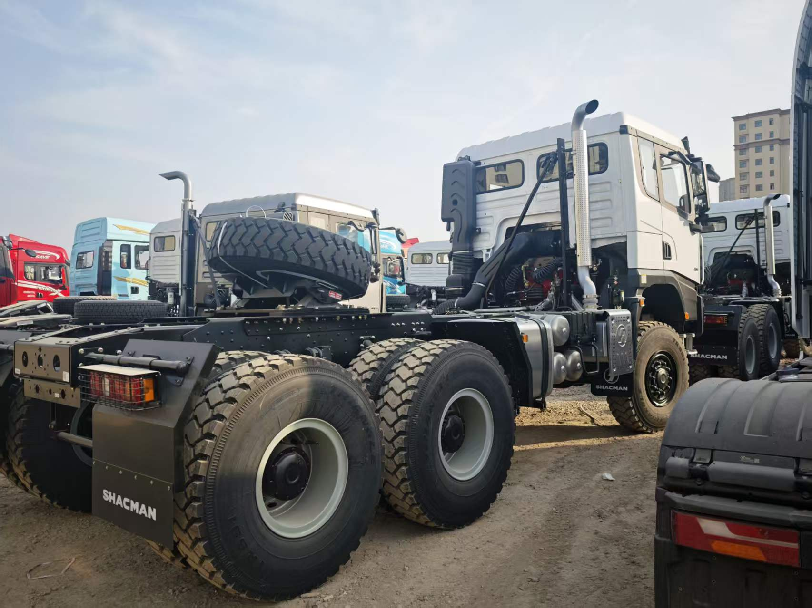
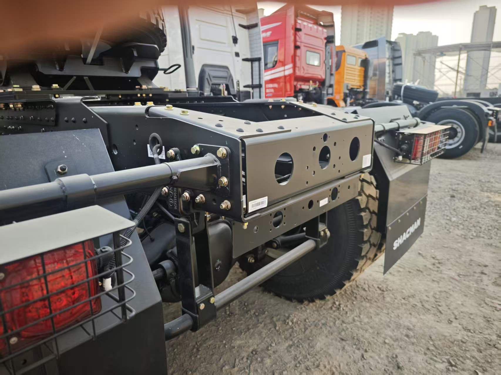

Direct answer: A SHACMAN X3000 6x6 tractor truck is relevant when a semi-trailer combination must work beyond ordinary paved highways and needs traction from all three axles. The reviewed quotation sheet identifies model SX42555V385 with a 430 HP Weichai engine, 12-speed FAST transmission and 6x6 drive. The real reference photos show an X3000 6x6 vehicle with 480 badging, so buyers must not assume the photographs and the 430 HP sheet are the same completed unit. The signed specification and inspection evidence must resolve that difference before shipment.
Why 6x6 tractor selection starts with the route, not horsepower
A 6x6 tractor adds a driven front axle to the tandem driven rear axle group. That can support traction where the combination encounters loose gravel, wet construction access, sand, soft shoulders or uneven project roads. It does not turn every semi-trailer combination into an unrestricted off-road vehicle. Ground conditions, axle loading, tire choice, trailer resistance and the driver's ability to maintain momentum still determine whether the truck can complete the route.
Before comparing engine ratings, divide the duty cycle into paved highway, maintained gravel road and difficult access-road sections. Record the steepest gradients, typical loaded speed, turning space and seasonal surface changes. A tractor that spends most of its life on paved roads may have different fuel, tire and gearing priorities from one that repeatedly pulls a lowbed or flatbed through project sites.
Verified reference specification
The following figures come from the supplied bilingual quotation sheet for model SX42555V385. They are more reliable than estimates made from exterior photos, but they remain a reference configuration until reconfirmed in the final order.
| Item | Reviewed sheet | Buyer verification point |
|---|---|---|
| Drive and steering | 6x6, left-hand drive | Confirm steering side and whether 6x6 is required throughout the duty cycle. |
| Wheelbase | 3775 + 1400 mm | Check turning space, trailer clearance and local dimension limits. |
| Engine | Weichai WP12.430E201, 430 HP, Euro II | Confirm emissions acceptance and production availability for the destination. |
| Transmission | FAST 12JSD200T-B | Review ratios against operating weight, gradients and highway speed. |
| Axles | 9-ton front axle; 16-ton double-reduction rear axles, 4.769 ratio | Confirm axle ratings, ratio and legal axle loads in the signed technical annex. |
| Frame and suspension | 850 x 300 mm frame; front and rear multi-leaf springs | Match chassis specification to fifth-wheel loading and route impact. |
| Fuel tanks | 380 L + 200 L steel tanks | Check route range, tank placement and any destination restrictions. |
| Tires | 13R22.5 mixed tread, 10 + 1 | Confirm load index, speed rating, tread and local replacement supply. |
| Brakes | Dual-circuit air service brake, spring parking brake, engine exhaust brake | Confirm trailer connections and any additional braking requirement. |
The quoted cab equipment includes an extended flat-top X3000 cab, hydraulic driver's seat, automatic climate control, electric windows, central locking, metal bumper, protective grilles, reversing buzzer and English markings. Options and availability can change, so the final checklist should identify every required item rather than referring only to “standard X3000 equipment.”
What the reference photos actually prove
The photographs clearly show an X3000 cab, a three-axle tractor chassis, heavy mixed-tread tires, tandem rear axles, fifth-wheel mounting area, spare-wheel carrier, metal bumper and protection around exposed components. The rear view is especially useful for checking frame layout, suspension packaging and the space available around the coupling area.
The images do not prove the engine model, transmission model, axle ratio, legal gross combination weight or destination compliance. They also show “480” exterior badging, while the reviewed quotation sheet lists a 430 HP engine. This is exactly why buyers should request a vehicle-specific production sheet and identification photos rather than approving an order from model-family pictures alone.

Rear chassis reference: tandem axle group, frame, spare-wheel carrier and coupling area should be checked against the final trailer requirement.
Match the tractor to the semi-trailer
The supplier cannot correctly select a tractor from the cargo name alone. A lowbed carrying machinery, a flatbed carrying steel, a tanker and a tipper semi-trailer place different demands on fifth-wheel height, coupling position, air and electrical connections, weight distribution and maneuvering space. Send the trailer drawing or at least its kingpin position, fifth-wheel height, axle layout and intended loaded mass.
For rough access roads, also describe the trailer's ground clearance and tire arrangement. A 6x6 tractor may retain traction while a heavily loaded trailer with unsuitable clearance or tire pressure becomes the limiting part of the combination. Final permissible weights must follow the approved truck, trailer and destination rules rather than a generic online payload claim.
Gearing, cooling and downhill control
A useful powertrain review combines engine output, transmission ratios and axle ratio with actual route data. Frequent low-speed starts on gradients require a different balance from long paved-road cruising. The reviewed sheet lists a 4.769 rear-axle ratio, but the buyer should ask the supplier to explain how the proposed engine, transmission and axle ratio fit the target operating weight and speed.
High ambient temperature, slow loaded climbing and dust can increase cooling and filtration demands. Long descents make speed control and brake heat management important. The reference configuration lists an engine exhaust brake; any requirement for additional auxiliary braking should be raised before quotation, not after production.
Tires and traction require a route-based decision
The reference sheet lists 13R22.5 mixed-tread tires. A buyer should still confirm load index, speed rating, tread pattern, tube or tubeless construction where relevant, spare quantity and brand availability. The right choice depends on how much of the route is paved, how abrasive the site surface is and whether mud, sand or sharp rock is common.
Tire specification also affects replacement planning. Fleet operators should identify locally available sizes and request a first-service parts package that matches the confirmed engine, filters and chassis. A tractor that can reach a remote site is only commercially useful if routine service items are available when needed.

Fifth-wheel area reference: coupling height, mounting position, trailer clearance and connection layout remain order-specific.
Pre-shipment inspection should reconcile every document
Inspection should connect the signed technical annex, the physical truck and the shipping documents. Ask for clear photographs of the full vehicle, model and identification plates, engine and transmission identification, axle markings, tire sidewalls, fuel tanks, fifth wheel, cab interior, tools and supplied spare parts. The inspection record should flag any difference between sales photos, quotation sheets and the completed vehicle.
For this type of enquiry, the power badge deserves a specific check because the current reference photos and 430 HP quotation sheet do not display the same number. The safe process is to confirm the ordered engine model in the contract and verify its identification on the actual unit before release.
Information to include in an RFQ
- Destination country, port, steering side and required emissions standard.
- Trailer type, kingpin position, fifth-wheel height and connection requirements.
- Cargo, target operating weight, daily distance and expected cruising speed.
- Percentage of paved, gravel and difficult access-road operation.
- Maximum gradient, altitude, temperature, dust and seasonal road conditions.
- Required engine range, transmission preference, auxiliary braking and fuel range.
- Tire requirement, spare-parts package, quantity and inspection scope.
- Preferred EXW, FOB or CIF quotation basis.
Frequently asked questions
When should a buyer consider a 6x6 tractor instead of a 6x4?
Consider 6x6 when loose, muddy, sandy or uneven access roads create a genuine need for an additional driven front axle. Compare that traction benefit with the route's highway share, fuel priorities, maintenance capability and legal requirements.
Is the photographed truck confirmed as the 430 HP quotation vehicle?
No. The photos show a genuine X3000 6x6 reference vehicle with 480 badging. The reviewed SX42555V385 sheet specifies 430 HP. The signed contract and vehicle-specific inspection must confirm which configuration is supplied.
What engine is listed in the reviewed sheet?
It lists a Weichai WP12.430E201 engine rated at 430 HP with Euro II emissions. Confirm current availability and destination suitability before ordering.
What trailer details should I send?
Send the trailer type, kingpin and fifth-wheel height, axle layout, cargo, target operating weight and required air and electrical connections.
Is this page a final technical offer?
No. It explains a reviewed reference configuration. Final specification, price, availability, compliance and delivery terms are confirmed for each order.
Request an X3000 6x6 tractor truck configuration
Send Andy your trailer, cargo, route, gradients, operating weight and destination. We will confirm an available configuration before preparing the quotation.